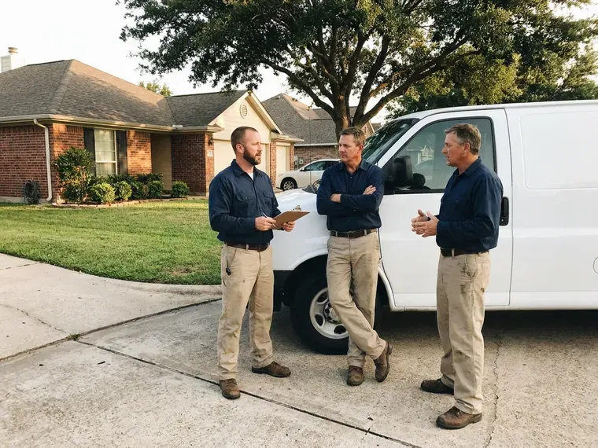

Hydro Jetting in Blue Springs, MO
Safe, thorough hydro jetting for homes and businesses in Blue Springs, MO, with a camera check before and after.
- Same-Day Jetting Available
- Water Only, No Chemicals
- Root-Cutting Nozzles
- Residential and Commercial Units

Same Clog Again? Schedule Hydro Jetting in Blue Springs, MO
Call FGV Plumbing and we will look at the pipe first, then quote the jetting.
Hydro Jetting for Houses and Shops in Blue Springs, MO
FGV Plumbing uses hydro jetting to clean drain and sewer pipes at pressures in the 3,000 to 4,000 PSI range for residential work. The nozzle does a lot of the work. Purpose-built nozzles pull the hose along while the spray scours the walls and breaks up whatever is ahead.
Some of what we do:
- Rotating, root-cutting and penetrating nozzle selection
- Pre and post jetting video inspection with recordings
- Grease, scale and root removal

Additional Drain Services Services in Blue Springs, MO
From stubborn kitchen clogs to main sewer backups, our drain services in Blue Springs, MO restore full flow fast and keep it that way.


Customers
Why Choose FGV Plumbing for Hydro Jetting in Blue Springs, MO?
Jetting cleans the pipe, not just the clog. Snaking leaves buildup behind. That coating is why snaked lines clog again so fast, and why a jetted line usually holds much longer.
- Maintenance Plans, Scheduled jetting keeps buildup from getting to the point of a backup.
- Chemical Free, Hydro jetting uses only water, so nothing harsh goes into your plumbing or the sewer system.
- Full-Wall Cleaning, Jetting scrubs the pipe circumference instead of leaving a narrow channel through the clog.
Citywide Coverage
Every neighborhood in Blue Springs gets jetting service from FGV Plumbing. Aging pipe and new pipe alike. From older areas with cast iron and clay to newer developments with PVC, we bring the right jetter and nozzle for the pipe under each home.
Experienced Team
These techs are trained to read pipe conditions on camera and choose pressure, flow and nozzle type to match. They have seen it all. Restaurant grease lines and rooted clay mains are both routine for them, and they adjust quickly when a line fights back.
Safety-First Approach
Our jetters are inspected regularly. Hoses get checked often. Regular equipment checks and a pre-jetting inspection keep both the machine and your pipes safe.
Trusted Certified Blue Springs Plumbing Services Professionals
At FGV Plumbing, we are proud to offer certified plumbing services throughout Blue Springs, MO. Credentials matter in this trade. Every repair, install and maintenance visit follows strict safety and quality rules, and the plumbers doing the work carry recognized industry credentials.
Call Us Now PHCC Plumbing Contractor Recognition
PHCC Plumbing Contractor Recognition Better Business Bureau (BBB) Accreditation
Better Business Bureau (BBB) Accreditation Angi Certified Pro
Angi Certified Pro ISO 9001 Quality Management Certification
ISO 9001 Quality Management CertificationHydro Jetting Services in Blue Springs, MO
Preventative Maintenance Hydro Jetting in Blue Springs, MO
Scheduled jetting heads off emergencies. It is cheaper than a backup. Regular cleaning removes buildup before it turns into a full blockage, and we set the schedule to match your usage.

Hydro Jetting for Hard Water Scale in Blue Springs
Homes around Blue Springs on private wells should test for hardness and bacteria before picking a treatment system. Scale traps debris. Clogs then form faster. Jetting breaks down and flushes out hard mineral deposits, restoring the full diameter of the pipe, and it works much better than chemical descalers that can also damage older pipe.
High-Pressure Water Jetting for Drain Cleaning in Blue Springs
Our jetters run up to 4,000 PSI. It is enough to split hardened grease. The same jet that clears grease from PVC can descale cast iron, as long as the pressure matches the pipe.
Camera Inspection and Hydro Jetting in Blue Springs, MO
The camera goes in before the jetter. We never skip it. An inspection locates the blockage, shows what it is made of and tells us the condition of the pipe, so we can confirm jetting is right and choose the correct pressure and nozzle.
Scheduled Jetting for Repeat Clogs in Blue Springs, MO
Recurring clogs follow a pattern. A schedule breaks it. Regular jetting on a set interval clears buildup before it causes a backup, and it saves money on emergency calls.
Tree Root Removal with Hydro Jetting in Blue Springs
Mature trees near old sewers cause trouble. Roots find the cracks. Jetting cuts and washes out roots far more completely than a snake, which buys more time before regrowth.
Older Home Drain Jetting in Blue Springs
Older homes collect decades of buildup. Kitchen and bath lines suffer most. Our nozzles follow the turns in an older system and clean it out safely, without chemicals and without harming the pipe.

Restaurant and Hotel Jetting in Blue Springs, MO
Restaurants and hotels build grease fast. Kitchens are not the only problem. Our heavy-duty commercial jetters clear grease and food waste from kitchen lines and restroom laterals while keeping downtime short, and regular service helps prevent interruptions during peak hours.
Hydro Jetting Service Near Me in Blue Springs, MO
A good local jetting company shows up with the right gear. We carry cart and trailer units. Cart jetters fit through side gates and into garages, while trailer units handle long commercial runs, so we can clean almost any line in town without a second trip.
Searching for hydro jetting near me in Blue Springs, MO? We are already nearby. That means shorter waits and a jetter at your door the same day in many cases, with a camera on the truck to check the pipe before any water goes in.
FGV Plumbing at a Glance
- Fully licensed plumbing team covering Blue Springs, MO
- Same-day appointments and 24/7 emergency response
- Clear written estimates, no hidden fees
- 4.9-star rated by 307+ Missouri customers
Blue Springs Map
Blue Springs Information
- Population
- 60,539
- Area codes
- 816/660/913
- Service area
- Blue Springs and communities within 40 miles
- Nearby
- Independence, Lee's Summit, Kansas City, Liberty
Ground movement in Blue Springs, MO can crack buried pipe and let roots in, and scale narrows drain lines a little more every year. Limestone and rocky ground in the southern part of the state can make digging for sewer lines slower and more costly.
Expert Services
Reach out to FGV Plumbing for honest, reliable plumbing from people who know the trade in Blue Springs, MO.
Our Specialized Plumbing Services in Blue Springs, MO
At FGV Plumbing, you get every kind of plumbing service from one company across Blue Springs, MO. We go from leak detection all the way to full system installations, for homes and commercial buildings, and we do it quickly at a fair price. Explore our core services below:


How a Hydro Jetting Visit Works in Blue Springs, MO
Inspect, jet, verify. We never skip a step.
Call to Schedule
Call (816) 330-2338 and describe the clogs you are seeing. We ask how often it happens and which drains are affected.
Camera Inspection
Your tech runs a camera to check the pipe and find the blockage. That confirms jetting is safe for your pipe.
Jet the Line
We feed the hose into the line and scour the walls in passes. Grease, roots and scale come out with the water.
Frequently Asked Questions About Hydro Jetting in Blue Springs
Residential jetting in Blue Springs usually costs $350 to $800. Commercial work is priced by the hour. The final number depends on how long the line is, how easy it is to reach and how much buildup is inside.
Every 1 to 3 years for most homes. Busy kitchens are a different story. Homes with recurring clogs or older pipe benefit from a regular schedule, while restaurants may need quarterly or twice-yearly jetting to keep grease under control.
Snaking punches a hole. Jetting cleans the pipe. A cable with an auger opens a path through the blockage, while high-pressure water scours the inside of the pipe and restores it to near-new condition, which lasts much longer.
Gorlitz, Spartan Tool and MyTana. All professional grade. We use these brands because they handle heavy blockages and long days without letting us down.
Every one to two years is enough for most homes. Heavy users need it sooner. Restaurants and other businesses with constant grease and food waste may need quarterly or twice-yearly jetting, and we can set up a maintenance schedule that fits.
Grease or root trouble, sewer odors and clogs that return after snaking are all solid reasons to consider a jetter.
Yes, on our workmanship. The length varies. The warranty term depends on the service and the condition of the pipe, and we go over all the details with you before starting any work on the line.
Small consumer jetters exist, but they lack the pressure and flow of professional units. Untrained use can hurt people and pipes.
Hear From Customers Who Hired Our Plumbing Experts

Tyler J.
We bought a taller comfort height toilet for my dad, who just had knee surgery. The plumber pulled the old one, found the flange was cracked, and replaced it before setting the new bowl. Took about two hours.
Toilet Installation · Blue Springs, MO
Angela D.
Our sump pump quit during a storm and the water was an inch from the basement carpet. FGV Plumbing put in a new pump with a battery backup that same evening. We have had two heavy rains since. It kicked on both times.
Sump Pump · Columbia, MONathan E.
Our tankless heater kept throwing an error code and shutting off mid shower. The tech flushed the heat exchanger, which was full of scale, and replaced a bad flow sensor. Hot water has been steady for half a year now.
Water Heater Repair · Blue Springs, MO
Robert G.
The camera showed a full break in our clay sewer line near the street. FGV Plumbing replaced it with a trenchless pipe burst, so the only digging was two small pits in the yard. They let us watch the footage before and after.
Sewer Line Replacement · St. Joseph, MOJames P.
Our restaurant had a slow leak at the hand sink that was rotting the cabinet base. FGV Plumbing came in at six in the morning before prep, replaced the trap and both supply lines, and was packed up before my first cook clocked in.
Commercial Plumbing · Kansas City, MODiane F.
My kitchen faucet had dripped for months and I finally got tired of hearing it at night. FGV Plumbing came out the next morning, replaced the cartridge and the O rings, and tightened a loose base that was letting water under the sink.
Faucet Repair · Independence, MO